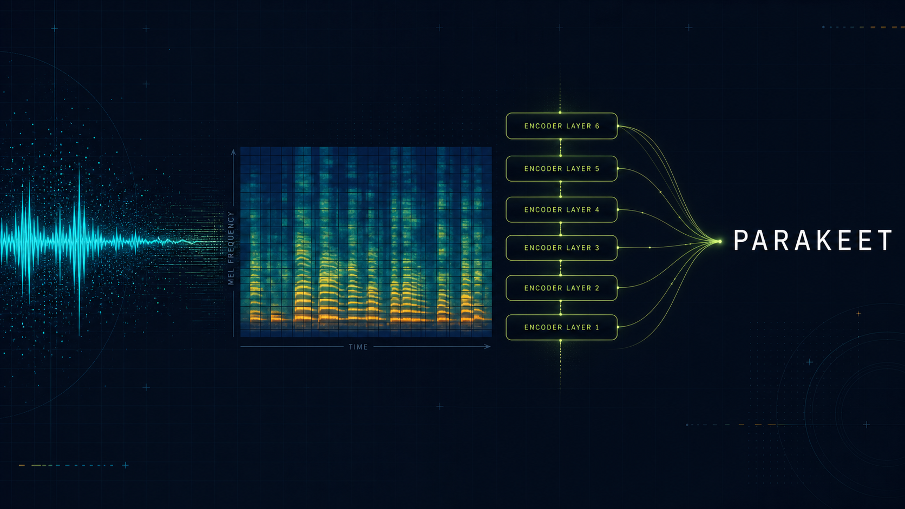
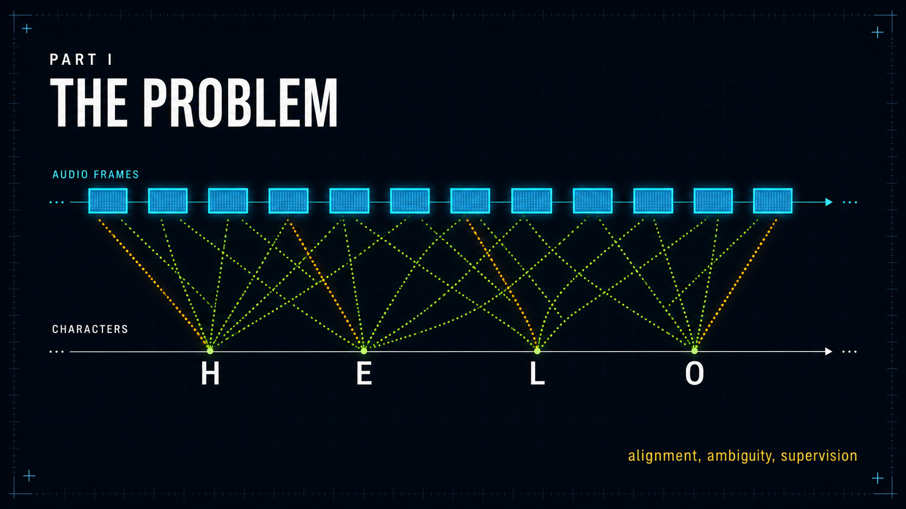
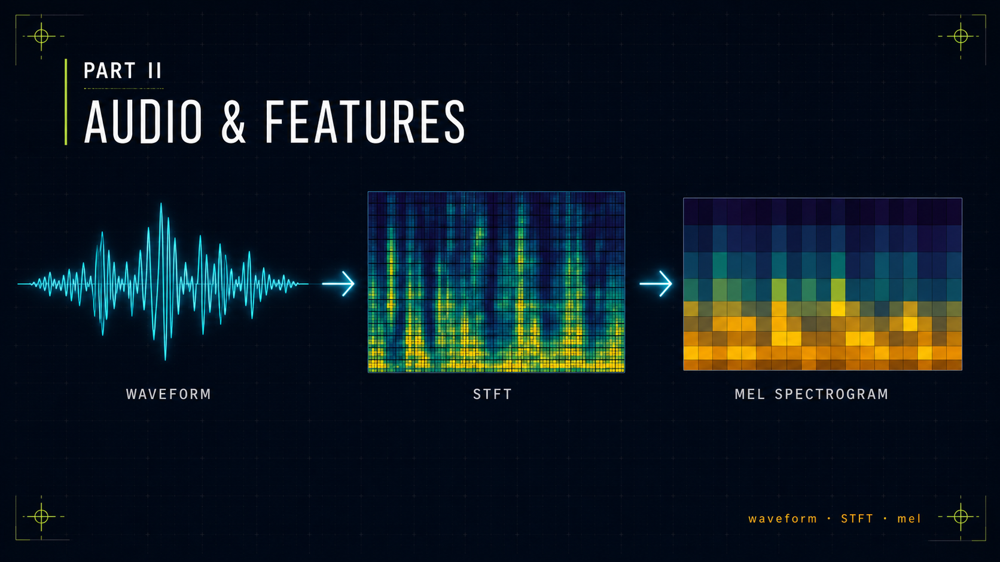
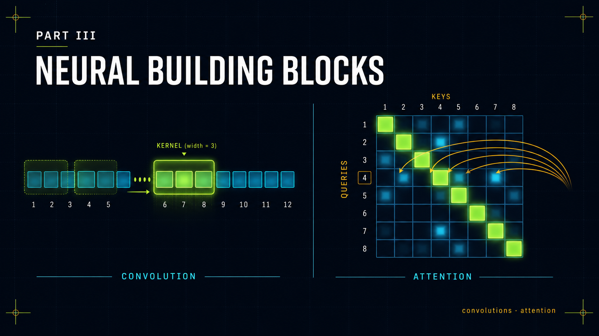
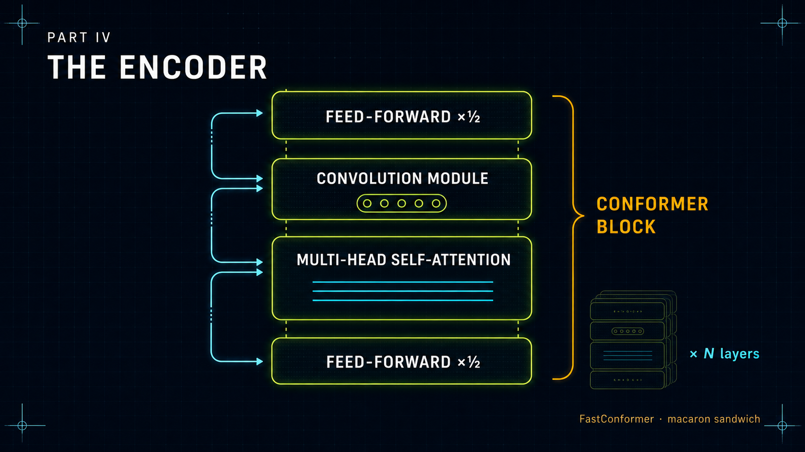
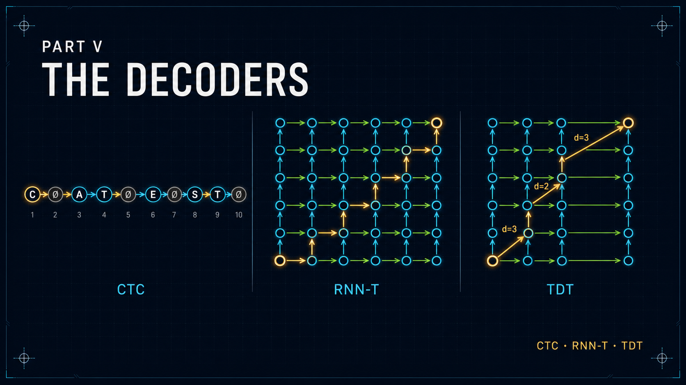
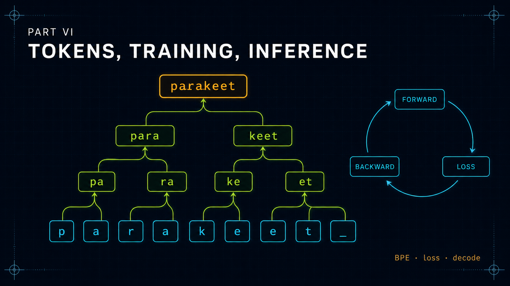
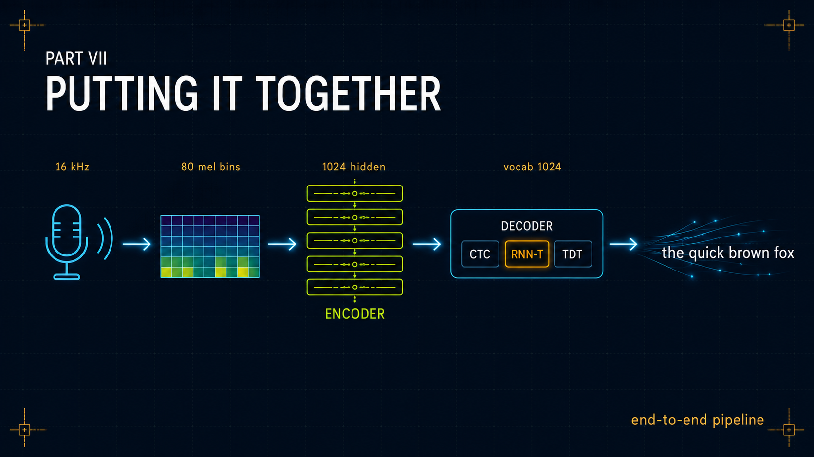

Parakeet Deep Dive
An engineering companion to NVIDIA's FastConformer-TDT speech recognition stack — from raw waveform to emitted text, with all the math and none of the hand-waving.
Preface
This companion was synthesised with the help of AI tools, working from the primary papers, the NeMo source, and public talks. It has been reviewed for accuracy, but AI-assisted writing is fallible: it may contain omissions, oversimplifications, or outright errors — particularly in the derivations and the exact configuration numbers.
If you spot something wrong or unclear, please help the next reader by opening a GitHub issue. Corrections, clarifications, and additions are all welcome.
This document exists because the Parakeet papers and NeMo docs are written for people who already know what an STFT is, what a CTC lattice looks like, and what "relative positional encoding" means without further elaboration. That assumed background is most of the value.
By the time you finish this document you should be able to:
- Explain to a stranger why ASR is fundamentally an alignment problem, and why every ASR family (HMM-GMM, hybrid HMM-NN, CTC, AED, transducer) makes a different alignment tradeoff.
- Derive the CTC forward-backward algorithm on a napkin.
- Draw the RNN-T lattice, then draw the TDT modification, then explain why the latter is roughly 2.8× faster at inference.
- Step through the FastConformer encoder layer by layer with the right tensor shapes at each point.
- Discuss, with NVIDIA staff, the trade-offs between full attention vs limited-context attention with global tokens for long-form audio, and why Parakeet-TDT-0.6B-v2 advertises ~24 minutes single-pass while the limited-context variants extend to many hours.
- Read the relevant NeMo source files (
conformer_encoder.py,rnnt.py,tdt_loop_labels_computer.py) and follow what every line does.
| Symbol | Meaning |
|---|---|
N | raw audio samples (16 kHz) |
Tmel | mel-spectrogram frames (10 ms hop, ~100 frames/sec) |
T (a.k.a. Tenc) | encoder frames after 8× subsampling (80 ms hop, 12.5 frames/sec). When this document says "T" inside an encoder/decoder context this is what is meant. |
U | output token sequence length |
V | non-blank token vocabulary (size 1024 for Parakeet-TDT v2; 8192 for v3) |
∅ | blank symbol (one extra index beyond V) |
D | set of allowed TDT durations, typically {0,1,2,3,4} |
ft / ht | encoder output at frame t |
gu | prediction-network state after u emitted non-blank tokens |
α(t,u) | forward variable: total probability of reaching lattice cell (t,u) |
Prerequisites
You should be comfortable with:
- Linear algebra: matrix multiplication, eigendecomposition, basic intuition for what a dot product means geometrically.
- Calculus: chain rule, gradients of vector-valued functions.
- Probability: conditional probability, log-likelihood, marginalisation.
- General CS: dynamic programming, recursion, the difference between $O(n^2)$ and $O(n)$, what a tensor is.
- Neural networks: you've trained an MLP and a small CNN; you understand backprop, SGD/Adam, dropout, batch norm. You don't need to have implemented attention from scratch.
- Transformers, vaguely: you've heard of self-attention, you know there's a thing called "multi-head". You don't need to know what relative positional encoding is — we'll build it up.
You do NOT need to know anything about audio processing, ASR specifically, or NeMo. We start from sample rates and end at production deployment.
How to read this
The document is linear — each chapter builds on the previous ones. There are interactive widgets embedded throughout; play with them. They exist because audio and lattices are spatial/visual concepts that prose alone fails to convey. Drag the sliders. Click the lattice cells. Build a Fourier series by hand. The intuition you build with the widgets is the intuition you need to reason about the model.
At the end of every major chapter, there's a 📄 Paper box pointing to the canonical source for that idea. Each links to the full entry in the Bibliography, where you'll find the citation and a link to retrieve the paper from its publisher or preprint server. Read them.

1. What ASR is, formally
Automatic Speech Recognition is the task: given an audio waveform $x \in \mathbb{R}^N$ (a sequence of pressure samples) produce a text string $y$. We want to learn $P(y \mid x)$ and emit $\arg\max_y P(y \mid x)$.
That sentence hides three pieces of structure that make the problem distinctive:
- The input is much longer than the output. A 10-second audio clip at 16 kHz is 160,000 samples. Its transcript is maybe 25 characters. The model has to compress by a factor of ~6,000.
- The compression rate is non-uniform. Speakers slow down, speed up, pause. A single phoneme can span 50 ms or 500 ms.
- There is no provided correspondence. The training data is just
(audio, transcript)pairs. You are not told "this sample range corresponds to the letter 'c'". You have to learn the alignment as part of learning to recognise.
Modern ASR pipelines split the problem into two stages:
The feature-extraction stage produces a sequence of compact vectors (typically log-mel filterbank features at 100 Hz) from the waveform. This is pure signal processing — no learning. The neural network then maps that sequence to text. Almost all the engineering interest is in the second stage, but you cannot understand the second stage without understanding what its input actually is, which is why we will spend the whole of Part II on the input.
2. The alignment problem
Imagine the simplest possible ASR setup. You have 1000 frames of audio features and you want to predict the transcript "cat" (3 characters). One way to train a neural network would be: classify each of the 1000 frames into one of {c, a, t, blank}, then collapse the result to "cat". But to train this with cross-entropy you'd need to know which frames are c, which are a, which are t, and which are blank. That information is not in your training data.
This is the fundamental challenge ASR systems exist to solve. Three families of solutions exist:
- Force alignment with a separate system. Use an HMM-based system to align the training data first, then train a model to predict the per-frame labels. This is the classical hybrid DNN-HMM approach (Mohamed, Dahl, Hinton, 2009). It works but requires the separate aligner, which is itself trained on some bootstrap data — an unappealing chain of dependencies.
- Marginalise over all alignments. Don't pick one alignment; treat all valid alignments as latent variables and sum over them during training. This is what CTC does (Graves et al. 2006). It's elegant and the loss is differentiable, but the assumption that frames are conditionally independent given the input is too strong.
- Treat the problem as sequence-to-sequence with attention. Use an encoder-decoder with attention, like Listen-Attend-Spell (Chan et al. 2015) or Whisper. The decoder reads the encoded audio "however it wants". This works very well but is fundamentally non-streaming and has a tendency to hallucinate when there's nothing to transcribe.
- Sequence transduction with a transducer. Marginalise over alignments like CTC, but also model output-output dependencies via a separate prediction network. This is RNN-T (Graves 2012) and its descendant TDT (Xu et al. 2023). Parakeet uses this.
The whole point of the rest of this document is to understand why option 4 won, and exactly how Parakeet implements it.
3. A brief lineage
To put Parakeet in context, here is the rough genealogy from "neural ASR is a research curiosity" to "Parakeet-TDT sits atop the OpenASR leaderboard":
Two technical strands run through this timeline:
- How do we model the audio? RNN → LSTM → bidirectional LSTM → Transformer → Conformer → FastConformer. Each step traded some inductive bias or some compute for better quality or speed.
- How do we handle alignment? CTC → seq2seq attention → RNN-T → TDT. Each step gave us a richer probabilistic model or a faster inference loop.
Parakeet is a particular point in design space: FastConformer encoder + TDT decoder. Whisper is a different point: encoder-decoder Transformer. Both are state-of-the-art for different reasons. Whisper's edge is multilingual breadth from massive weak supervision; Parakeet's edge is inference speed and word-level timestamps from the transducer architecture.

4. Digital audio from first principles
Sound is a pressure wave in air. A microphone converts that pressure into a voltage. An analog-to-digital converter (ADC) measures that voltage at regular intervals and stores each measurement as an integer. The output is a sequence of numbers $x[0], x[1], x[2], \ldots$ called samples.
Two parameters matter:
- Sample rate $f_s$, in Hz: how many measurements per second. Speech ASR uses 16,000 Hz (16 kHz). Telephony historically used 8 kHz. CD audio is 44.1 kHz. Studio audio is 48 kHz or 96 kHz.
- Bit depth: how many bits per sample. Usually 16 bits, giving a dynamic range of about 96 dB. ASR models work on float32 normalised to roughly $[-1, 1]$.
The Nyquist–Shannon sampling theorem
This is the single most important fact in digital signal processing:
16 kHz audio captures everything up to 8 kHz. Most speech energy is below 8 kHz (fricatives like /s/ and /sh/ have most of their energy in the 3–8 kHz range), which is why 16 kHz is the standard for ASR. Music needs 44.1 kHz because human hearing extends to ~20 kHz.
To see why aliasing happens, play with this:
Why 16 kHz for ASR specifically
If you look at every Parakeet config you'll see sample_rate: 16000. The choice is a pragmatic compromise:
- Telephony audio (8 kHz sample rate, ~300–3400 Hz channel passband) degrades sibilant and fricative cues and visibly hurts WER — though strong models still work passably on it.
- 22.05/44.1 kHz audio doubles or triples the sample count for diminishing returns. Most phonetic information used by general ASR sits below 8 kHz; speech does have energy above that (frication detail, speaker/channel cues), but the compute cost is usually not justified for general-purpose transcription.
- 16 kHz is the de-facto standard for ASR research, which means almost all training data is at this rate, which means models expect it. Whisper, Parakeet, Conformer, Wav2Vec — all 16 kHz.
If your input is at a different rate, you must resample (using a polyphase or sinc filter) to 16 kHz before feeding the model. NeMo's preprocessor will do this automatically if needed.
fs/2. Real signals never are. In practice the ADC chain includes an anti-aliasing low-pass filter with a finite transition band, so you sample above the theoretical minimum (e.g. 44.1 kHz for 20 kHz audio leaves room for the filter rolloff). The widget above shows samples reconstructed by straight-line interpolation, not the ideal sinc reconstruction the theorem assumes — that's why the "above Nyquist" cases look so bad. Real sinc reconstruction (or a polyphase resampler) recovers exact values at sample points and a well-behaved interpolation between them.
5. The Fourier transform — the right intuition
The Fourier transform is the foundational tool of audio processing. The single most useful statement of it is:
Any reasonable function can be decomposed into a sum of sine waves of different frequencies, amplitudes, and phases. The Fourier transform finds the amplitudes and phases.
For a continuous signal $x(t)$:
$$X(f) = \int_{-\infty}^{\infty} x(t) \, e^{-2\pi i f t} \, dt$$For a discrete signal of length $N$ (which is what we actually have), this becomes the Discrete Fourier Transform:
$$X[k] = \sum_{n=0}^{N-1} x[n] \, e^{-2\pi i k n / N}, \quad k = 0, 1, \ldots, N-1$$Two things to understand about that formula:
- The complex exponential $e^{-2\pi i f t} = \cos(2\pi f t) - i \sin(2\pi f t)$ is just a way of encoding both a cosine and a sine into one number. The cosine measures the "in-phase" component, the sine measures the "90°-out-of-phase" component. Together they capture both amplitude and phase.
- The DFT is just $N$ inner products: $X[k]$ is the inner product of $x$ with the complex sinusoid of frequency $k$. If that sinusoid is "in" the signal, the inner product is large.
You should think of the DFT not as a scary integral but as a change of basis: it takes a vector in the time-sample basis and rewrites it in a frequency basis. Both representations contain exactly the same information; you can invert one to the other.
The Fast Fourier Transform (FFT)
The DFT as written above costs $O(N^2)$ operations. The FFT (Cooley-Tukey 1965) computes the same answer in $O(N \log N)$ by exploiting the recursive structure of the sinusoids. FFT is just a fast algorithm for the DFT; the math is identical. When you see n_fft=512 in a Parakeet config, it means the FFT size is 512 samples. The analysis window itself is only 400 samples (25 ms at 16 kHz) — the remaining 112 samples are zero-padded, which gives the FFT a power-of-two length that the Cooley-Tukey radix-2 algorithm prefers, without actually adding new signal content.
What the FFT alone can't do
The DFT/FFT tells you what frequencies are in your entire signal, but not where in time they occurred. If you take a 10-second audio clip and FFT the whole thing, you get one number per frequency bin telling you the average energy at that frequency over the whole clip. The fact that the speaker said "cat" at second 1 and "dog" at second 5 is lost.
For speech, we need time-localised frequency information. That's what the STFT is for.
6. The Short-Time Fourier Transform
The idea is brutally simple: chop the signal into short overlapping windows, FFT each window separately, stack the results.
The parameters of an STFT are:
- Window size $W$ (samples): how long each window is. Parakeet uses 25 ms = 400 samples at 16 kHz. The FFT size is rounded up to a power of 2, hence
n_fft=512. - Hop size $H$ (samples): how far we step between windows. Parakeet uses 10 ms = 160 samples. So adjacent windows overlap by 15 ms.
- Window function: a tapered envelope (Hann, Hamming, etc.) we multiply the audio by before FFTing, to suppress edge artifacts. Parakeet uses Hann: $w[n] = 0.5(1 - \cos(2\pi n / (W-1)))$.
The output is a 2D array: rows are frequency bins, columns are time frames. Take the magnitude (throw away phase) and you have a spectrogram.
Why exactly 25 ms windows?
Speech is locally stationary on the order of 20–30 ms. The vocal tract changes shape on the time scale of phonemes (~50–200 ms), so within a 25 ms window you see basically one phonetic state. Make the window much shorter and you can't resolve the formant frequencies (the resonances of the vocal tract that distinguish vowels). Make it much longer and you blur across phoneme boundaries. 25 ms / 10 ms is folklore by now and every speech system uses it or something close.
7. The mel scale — making frequency match perception
The spectrogram from the STFT has linearly-spaced frequency bins: bin 0 is 0–31 Hz, bin 1 is 31–62 Hz, etc. (with n_fft=512 and 16 kHz sample rate the bin width is $16000/512 \approx 31.25$ Hz).
But human hearing is not linear in frequency. We are very sensitive to differences in the low frequencies (we can easily tell 100 Hz apart from 200 Hz) but progressively less sensitive in the high frequencies (5000 Hz vs 5100 Hz is indistinguishable). The mel scale, due to Stevens, Volkmann & Newman (1937), is a perceptual frequency scale on which equal distances correspond to equal perceived pitch differences. A common formula is:
$$m(f) = 2595 \log_{10}\left(1 + \frac{f}{700}\right)$$The mel scale is roughly linear below ~1000 Hz and roughly logarithmic above.
From spectrogram to log-mel
The full transformation Parakeet applies is:
- STFT: $X[k, t] = \text{FFT}(\text{window}_t \cdot \text{audio})$, output shape $[n_{\text{fft}}/2+1, T]$ = $[257, T]$.
- Magnitude or power: $|X[k, t]|^2$ (Parakeet uses power).
- Mel filterbank: apply a matrix multiplication $M \in \mathbb{R}^{n_{\text{mel}} \times 257}$ to convert 257 linear bins into $n_{\text{mel}}$ mel bins. Parakeet uses $n_{\text{mel}} = 80$.
- Log: take $\log(\text{mel-spec} + \epsilon)$ to compress the dynamic range. Speech has 60+ dB of dynamic range; the log brings it into a friendlier numerical range.
- Per-feature normalisation: subtract the per-utterance mean and divide by the per-utterance standard deviation, computed per mel bin. This makes the model robust to overall recording level and channel effects.
The end result is a tensor of shape $[B, 80, T]$ where $T$ is the number of 10-ms frames. This is what gets fed into the FastConformer encoder.
8. The full Parakeet preprocessor
Let's put it together with concrete numbers. Suppose we have a 10-second audio clip at 16 kHz.
The output is the input to the encoder. From this point on, everything is learned. Note that the entire preprocessing pipeline above is deterministic and has zero learnable parameters.
AudioToMelSpectrogramPreprocessor class.9. SpecAugment — masking as augmentation
SpecAugment (Park et al. 2019) is a data augmentation method applied at the spectrogram level, between the preprocessor and the encoder. It does two simple things:
- Frequency masking: zero out a contiguous band of mel bins for the whole utterance. Bandwidth chosen uniformly from $[0, F]$ where $F=27$ for Parakeet. Repeat up to 2 times.
- Time masking: zero out a contiguous range of time frames for all mel bins. Width chosen uniformly from $[0, p \cdot T]$ where $p = 0.05$. Repeat up to 10 times.
That's it. It's astonishingly effective — comparable to a 2× increase in training data.
(W=0, F=27, mF=2, T=p·T_utt, p=0.05, mT=10).

10. 1D convolutions for sequence data
You probably first learned about convolutions in the 2D image setting. For audio we use the 1D version. The mechanics are the same, just one fewer dimension.
A 1D convolution layer takes an input of shape $[B, C_{\text{in}}, T]$ and produces an output of shape $[B, C_{\text{out}}, T']$, where:
- $B$ is batch size
- $C_{\text{in}}$ and $C_{\text{out}}$ are input and output channels (in our case, mel bins or hidden dimensions)
- $T$ and $T'$ are the time lengths
The math: for each output channel $c$ and each output time step $t$,
$$y[b, c, t] = \sum_{c'=0}^{C_{\text{in}}-1} \sum_{k=0}^{K-1} W[c, c', k] \cdot x[b, c', s \cdot t + k - p]$$where $K$ is the kernel size, $s$ is the stride, $p$ is padding. The kernel $W$ has shape $[C_{\text{out}}, C_{\text{in}}, K]$, which is $C_{\text{out}} \cdot C_{\text{in}} \cdot K$ parameters.
In Parakeet, 1D convolutions appear in two roles:
- Subsampling: at the very front of the encoder, three stacked stride-2 1D convs cut the sequence length by 8× while expanding the channel dimension.
- Inside each Conformer block: a depthwise 1D conv of kernel size 9 (in FastConformer; 31 in the original Conformer) provides local context mixing inside each block.
11. Depthwise and separable convolutions
A standard 1D convolution layer with $C_{\text{in}} = C_{\text{out}} = 256$ and $K = 9$ has $256 \times 256 \times 9 = 589{,}824$ parameters and proportional FLOPs. If we do this many times we burn a lot of compute on the convolutions alone.
Depthwise convolution: each input channel gets its own independent kernel. No cross-channel mixing. Parameter count: $C \times K$. With $C=256, K=9$: only 2,304 parameters — a 256× reduction.
Pointwise convolution: a kernel of size 1 that mixes across channels. Parameter count: $C_{\text{in}} \times C_{\text{out}} \times 1$.
Depthwise-separable convolution: depthwise followed by pointwise. Total: $C \cdot K + C^2$ parameters. For $C=256, K=9$: $2{,}304 + 65{,}536 = 67{,}840$ — almost 9× cheaper than the equivalent full convolution.
Inside the Conformer block, there's actually a third variant: a depthwise conv flanked by two pointwise convs, with a GLU activation in between. We'll see that in chapter 17.
12. Self-attention from scratch
Self-attention is the mechanism that lets every position in a sequence look at every other position and decide what's relevant. The math is short:
$$\text{Attention}(Q, K, V) = \text{softmax}\left(\frac{QK^\top}{\sqrt{d_k}}\right) V$$Unpacking it. Suppose the input sequence is $X \in \mathbb{R}^{T \times d}$. We project it three ways using learned matrices $W_Q, W_K, W_V \in \mathbb{R}^{d \times d_k}$:
$$Q = X W_Q, \quad K = X W_K, \quad V = X W_V$$Now $Q, K, V \in \mathbb{R}^{T \times d_k}$. Each row of $Q$ is a "query" — a description of what that position is looking for. Each row of $K$ is a "key" — a description of what that position offers. Each row of $V$ is a "value" — the actual content that will be pulled out.
The matrix $QK^\top$ has shape $[T, T]$: entry $(i, j)$ is the dot product of query $i$ with key $j$ — how well "what position $i$ is looking for" matches "what position $j$ offers". The softmax over each row turns these scores into a probability distribution. Multiplying by $V$ then computes, for each output position, a weighted average of values, weighted by attention.
The $\sqrt{d_k}$ scaling exists so that, with random initialisation, the dot products have unit variance regardless of $d_k$. Without it, the softmax saturates for large $d_k$ and gradients vanish.
Computational cost
The $QK^\top$ matrix has $T^2$ entries. For a 24-minute audio at 80 ms frame rate, $T = 18{,}000$, so we'd have $3.24 \times 10^8$ entries per attention head per layer. This is the quadratic-attention problem and is the whole motivation for the long-form attention techniques in chapter 19.
13. Multi-head attention
A single attention head computes one weighted average per position. Multi-head attention runs $h$ heads in parallel, each with smaller $d_k = d/h$ projections, then concatenates the results.
$$\text{MHA}(X) = \text{Concat}(\text{head}_1, \ldots, \text{head}_h) W_O$$where $W_O \in \mathbb{R}^{d \times d}$ is a final output projection. Parakeet uses $h = 8$ heads with $d_{\text{model}} = 512$ for the Large variant, so $d_k = 64$ per head. For the 0.6B XL variant: $h = 8$, $d_{\text{model}} = 1024$, $d_k = 128$.
Why multi-head? Empirically, different heads learn different relationships — some heads track phonetic context, some track syntactic structure, some attend to specific positions like sentence boundaries. Forcing the model to commit to a single attention pattern per layer reduces capacity; multiple heads let it learn several at once.
The parameter cost is the same as single-head with the same total dimension (because the per-head projection matrices shrink as $h$ grows), but you get $h$ different attention patterns for free.
14. Positional encoding — why it matters
Without positional information, self-attention is permutation-equivariant: if you permute the input sequence, the output is permuted the same way. It has no intrinsic notion that one token came before another. This is a disaster for sequence modelling, because "dog bites man" and "man bites dog" should produce different outputs.
So we need to tell the model what position each token is at. The original Transformer (Vaswani 2017) added fixed sinusoidal position embeddings:
$$\text{PE}[t, 2i] = \sin(t / 10000^{2i/d}), \quad \text{PE}[t, 2i+1] = \cos(t / 10000^{2i/d})$$and just added these to the token embeddings before the first attention layer. Each position gets a unique pattern of sines/cosines at different frequencies.
The problem with absolute positional encodings for ASR
You train on 30-second utterances, position 0–375 (at 80 ms frame rate). At inference you want to handle a 24-minute clip — position 18,000. The model has never seen positions that large; the sinusoidal pattern is technically defined there, but the attention weights were trained on a tiny range. Quality degrades — often catastrophically, sometimes only modestly, depending on architecture, normalization, and training-length distribution.
The standard fix is to make the model see only relative positions ("how far apart are these two frames") not absolute positions ("what frame number is this"). That's what Transformer-XL relative positional encoding does. Relpos is one ingredient in long-form generalisation; the others (chunked/windowed attention, global tokens, training length curriculum) are covered in chapter 19.
15. Transformer-XL relative positional encoding
This is the most algebraically dense chapter in the document. Take a deep breath. We will derive it from scratch.
Recall the standard absolute-position attention. We compute the score between query position $i$ and key position $j$ as a dot product of two vectors that each contain both content and positional information. If we let $E_x$ be the content embedding and $U$ be the position embedding, the input vector at position $i$ is $E_{x_i} + U_i$. Then the attention score is:
$$A^{\text{abs}}_{ij} = (E_{x_i} + U_i)^\top W_Q^\top W_K (E_{x_j} + U_j)$$Expand this. It gives four terms:
$$A^{\text{abs}}_{ij} = \underbrace{E_{x_i}^\top W_Q^\top W_K E_{x_j}}_{\text{(a) content–content}} + \underbrace{E_{x_i}^\top W_Q^\top W_K U_j}_{\text{(b) content–pos}} + \underbrace{U_i^\top W_Q^\top W_K E_{x_j}}_{\text{(c) pos–content}} + \underbrace{U_i^\top W_Q^\top W_K U_j}_{\text{(d) pos–pos}}$$The Transformer-XL trick (Dai et al. 2019) is to make three changes that turn this into a relative formulation:
- In terms (b) and (d), replace the absolute position $U_j$ with a sinusoidal vector $R_{i-j}$ that depends only on the relative distance.
- In terms (c) and (d), replace $U_i^\top W_Q^\top$ — which depends on the absolute query position — with a learnable global bias vector. Use $u^\top$ in the term that ends with $E_{x_j}$ (the "global content bias") and $v^\top$ in the term that ends with $R_{i-j}$ (the "global position bias").
- Use a separate projection matrix $W_R$ for the relative position embeddings, so that the content vs position projections don't have to share weights and fight each other.
The result:
$$A^{\text{rel}}_{ij} = \underbrace{E_{x_i}^\top W_Q^\top W_K E_{x_j}}_{\text{(a) content–content}} + \underbrace{E_{x_i}^\top W_Q^\top W_R R_{i-j}}_{\text{(b) content–position}} + \underbrace{u^\top W_K E_{x_j}}_{\text{(c) global content bias}} + \underbrace{v^\top W_R R_{i-j}}_{\text{(d) global position bias}}$$Term-by-term interpretation:
- (a) "How much does the content at position $i$ care about the content at position $j$, ignoring position entirely?"
- (b) "How much does the content at position $i$ care about being at a distance $i-j$ from another token?"
- (c) A global bias from $u$: "How much does everyone attend to the content $E_{x_j}$?" Useful for learning to up- or down-weight common keys.
- (d) A global bias from $v$: "How much does everyone attend to a key at relative distance $i-j$?" This is where the model learns things like “attend more strongly to nearby frames” or “decay with distance”.
The model never sees an absolute position. Train on 30-second utterances and the relative distances range over a few hundred values; inference on 24 minutes uses larger relative distances, but the sinusoidal $R$ is defined for arbitrary distances and the model's learned attention pattern (in terms of distance) generalises smoothly.
In the NeMo Conformer config you see this as:
self_attention_model: rel_pos
n_heads: 8
untie_biases: true # separate u, v per layer
pos_emb_max_len: 5000 # max relative distance precomputed- Dai et al., Transformer-XL (2019) — Section 3.3 is the relpos derivation. Read it after this chapter.
- Vaswani et al., Attention Is All You Need (2017) — Section 3.5 has the original sinusoidal PE for comparison.
16. Layer normalisation, residuals, and the macaron sandwich
Three small but important architectural patterns appear repeatedly in Conformer blocks.
LayerNorm
For an input vector $x \in \mathbb{R}^d$ (one position, one batch element):
$$\text{LN}(x) = \gamma \odot \frac{x - \mu}{\sqrt{\sigma^2 + \epsilon}} + \beta$$where $\mu, \sigma^2$ are the mean and variance computed over $d$, and $\gamma, \beta \in \mathbb{R}^d$ are learned. LayerNorm normalises across the feature dimension, per-token, so it's independent of batch size and sequence length. This is critical for variable-length sequence models — batch norm would couple the normalisation to other examples in the batch and to padding.
Residual connections
$y = x + f(x)$. Trivially simple, profoundly important. He et al. (2015) showed that adding the input to the output of a layer makes very deep networks trainable, because gradients can flow back along the identity path even if $f(x)$'s gradient vanishes.
Pre-norm vs post-norm
Should LayerNorm sit before $f$ or after?
- Post-norm: $y = \text{LN}(x + f(x))$. The original Transformer. Tends to be unstable to train at large depth without careful warmup.
- Pre-norm: $y = x + f(\text{LN}(x))$. The modern default. More stable, easier to scale.
Conformer uses pre-norm throughout.
The macaron sandwich
The original Transformer block is: $x \to \text{MHA} \to \text{FFN} \to y$, with residual + LN around each. The Conformer block uses a macaron structure: it splits the FFN into two half-step FFNs that sandwich the attention and convolution modules.
Why "½ FFN"? Each half-FFN's residual contribution is scaled by 0.5: $y = x + 0.5 \cdot \text{FFN}(\text{LN}(x))$. The justification comes from Macaron-Net (Lu et al. 2019), which interprets the Transformer's residual stream as a discretisation of an ODE. Strang splitting for ODEs suggests that a symmetric structure of half-steps around a central operation has better numerical properties than a sequence of full steps. In practice the macaron form gives a small but reliable WER improvement at the same parameter count.

17. The Conformer block, dissected
Now we put the building blocks together. A Conformer block (Gulati et al. 2020) is:
The math of one block, from input $x_0$ to output $x_4$:
$$\begin{aligned} x_1 &= x_0 + \tfrac{1}{2} \, \text{FFN}_1(\text{LN}(x_0)) \\ x_2 &= x_1 + \text{MHSA}_{\text{relpos}}(\text{LN}(x_1)) \\ x_3 &= x_2 + \text{ConvMod}(\text{LN}(x_2)) \\ x_4 &= \text{LN}(x_3 + \tfrac{1}{2} \, \text{FFN}_2(\text{LN}(x_3))) \end{aligned}$$The FFN module
A position-wise feedforward network with an expansion factor of 4:
$$\text{FFN}(x) = \text{Dropout}(W_2 \cdot \text{Swish}(W_1 x + b_1) + b_2)$$where $W_1 \in \mathbb{R}^{4d \times d}, W_2 \in \mathbb{R}^{d \times 4d}$. Swish is $x \cdot \sigma(x)$, basically a smoother ReLU.
The Convolution module
This is the part that makes Conformer "conformer" — it gives every block direct access to local temporal context, not just global attention.
The GLU (Gated Linear Unit, Dauphin et al. 2017) takes a tensor of $2d$ channels, splits it into two tensors of $d$ channels each, and returns $a \odot \sigma(b)$ — an element-wise product where the second half acts as a learned gate on the first half. It gives the convolution module a multiplicative interaction without the cost of squaring the channel dimension.
The depthwise conv with kernel 9 looks at $\pm 4$ frames around each position. At 80 ms per frame that's ~720 ms of context. Enough to capture syllable-scale structure and short-range coarticulation effects that pure attention sometimes misses.
18. FastConformer — the optimised variant
FastConformer (Rekesh et al. 2023, paper 01) is the encoder Parakeet actually uses. It's Conformer with four changes:
| Change | Conformer | FastConformer | Effect |
|---|---|---|---|
| Subsampling factor | 4× (40 ms frames) | 8× (80 ms frames) | Half the encoder sequence length → ¼ the attention FLOPs |
| Subsampling convs | 2× stride-2 standard convs | 3× stride-2 depthwise-separable convs | Smaller, faster subsampler |
| Subsampler channels | typically 512 | 256 | Reduces stem parameter count |
| Conv kernel size | 31 | 9 | Smaller conv module, marginal WER impact |
The headline result: 2.4–2.8× faster than Conformer at equivalent WER. All four changes are independently small; their compounding is what delivers the speedup.
The 8× subsampling stem
The first thing the encoder does is run three stride-2 depthwise-separable convolutions, expanding from the 80 mel inputs to 256 channels:
After subsampling, each "frame" represents 80 ms of audio. A 24-minute audio is ~144,000 pre-subsampling mel frames (at 10 ms hop) → ~18,000 encoder frames (at 80 ms hop). A 10-second utterance is ~1,000 mel frames → ~125 encoder frames. The encoder doesn't care about input length; it just processes a $[B, T, d]$ tensor and returns another $[B, T, d]$ tensor. (Exact lengths depend on STFT centering and conv padding; treat these as ≈ values.)
Concrete configurations
| Model | Layers | $d_{\text{model}}$ | Heads | FFN dim | Encoder params |
|---|---|---|---|---|---|
| FastConformer Large (120M) | 17 | 512 | 8 | 2048 | ~110M |
| FastConformer XL (Parakeet 0.6B) | 24 | 1024 | 8 | 4096 | ~570M |
| FastConformer XXL (Parakeet 1.1B) | 42 | 1024 | 8 | 4096 | ~1.0B |
The decoder (TDT or RNN-T) adds 20-50M parameters depending on the prediction-network LSTM hidden size and the joint network projection dim.
19. Long audio: limited context attention and global tokens
Full self-attention on 18,000 encoder frames is $18{,}000^2 \approx 3.24 \times 10^8$ entries per head per layer. With 8 heads, fp16, the attention matrix for a single layer is already ~5 GB per batch element; for training you also store activations across all 24 layers (~120 GB worst case for backprop), and even at inference the per-layer scratch plus KV state can saturate an A100. The headline number depends on whether you're counting per-layer peak (small enough for full attention up to ~24 minutes on Parakeet-v2 on an 80 GB A100) or training-time activation cumulative (much larger).
The point is: naively materialising the $T \times T$ attention matrix scales as $O(T^2)$, and you eventually run out of memory or budget. Parakeet's long-form variants avoid that with two ideas:
Limited Context Attention (LCA)
Each query position attends only to keys within a window of $L$ frames to the left and $R$ frames to the right. Cost drops from $O(T^2)$ to $O(T \cdot (L+R))$, linear in $T$.
Global tokens
A handful of learnable "global" tokens are concatenated to the sequence. They attend to and are attended to by every other position. This restores the model's ability to aggregate utterance-level context that the windowed local attention destroys.
Together these are exactly the Longformer pattern (Beltagy, Peters & Cohan 2020):
Concretely, Parakeet trains the long-form variants with att_context_size: [128, 128] and a small number of global tokens (typically 4). At inference, the 1.1B model can transcribe 12.5 hours of audio in a single pass on an 80 GB A100. The 0.6B model gets 13 hours.
The full-attention Parakeet-TDT-0.6B-v2 (the one on the OpenASR leaderboard) doesn't use LCA — it just caps single-pass input at ~24 minutes and uses chunking for longer files. The leaderboard scores benefit from full attention; the long-form variants benefit from LCA. They're different optimisation points.
- Beltagy et al., Longformer (2020) — for the windowed + global attention pattern.
- Koluguri et al., Long-Form ASR (2023) — putting it together for ASR specifically. Section 4 has the global token results.

20. Three ways to turn encoder frames into text
The encoder has done its job: it took a $[B, T_{\text{in}}, 80]$ mel-spectrogram and produced a $[B, T, d]$ encoded sequence at 80 ms frame rate. Now we need to convert that into a token sequence — the transcript.
Three families of decoder exist in the Parakeet codebase:
| Decoder | Train cost | Inference cost | Accuracy | Streaming | Timestamps |
|---|---|---|---|---|---|
| CTC | Cheap | Fastest | Lowest (needs LM for parity) | Trivial | Per-frame, coarse |
| RNN-T | Expensive | Fast | High | Yes | Per-token, good |
| TDT | Expensive | Fastest | Highest | Yes | Per-token, with durations |
The Parakeet family ships checkpoints for all three. parakeet-tdt-0.6b-v2 (the OpenASR leader) uses TDT. parakeet-rnnt-1.1b uses RNN-T. parakeet-ctc-1.1b uses CTC. Same encoder, different decoders.
We'll build up the math in the order they were invented: CTC first, then RNN-T as a strict generalisation, then TDT as a clever extension of RNN-T.
21. CTC, derived from first principles
Connectionist Temporal Classification (Graves et al. 2006) was the first method that let you train a neural ASR system on unaligned (audio, transcript) pairs without needing a forced aligner.
The setup
The CTC decoder is just a linear layer projecting each encoder frame to $|V|+1$ logits, where $V$ is the vocabulary and the extra slot is a special token called blank (written $\varnothing$). At each frame the model produces a probability distribution over $V \cup \{\varnothing\}$.
So for each frame we get one symbol. With $T$ encoder frames we get a sequence $\pi = (\pi_1, \ldots, \pi_T)$ of length $T$, called an alignment. Each $\pi_t \in V \cup \{\varnothing\}$.
The collapse rule
To go from an alignment $\pi$ to a transcript $y$, apply this function $\mathcal{B}$:
- Collapse runs of consecutive identical labels into one.
- Remove all blanks.
Examples (for target "CAT" with T=8):
CCAATT__→CAT✓_C_A_T__→CAT✓CCCAA_TT→CAT✓CCATTAT_→CATAT✗ (wrong)CATT_CCC→CATC✗ (wrong)
Note that for a target like "AA" (with two identical adjacent characters), you must have a blank between the two A's in the alignment, otherwise the collapse rule will merge them. This is the entire reason blanks exist.
The probability of a transcript
The CTC objective for a single $(x, y)$ pair is to maximise the probability of $y$, which is the sum over all alignments $\pi$ that collapse to $y$:
$$P(y \mid x) = \sum_{\pi \in \mathcal{B}^{-1}(y)} \prod_{t=1}^{T} P(\pi_t \mid x)$$This formula assumes conditional independence of the per-frame predictions given $x$, which is why CTC needs an external language model to do well — the model itself does not learn dependencies between output tokens.
The forward-backward algorithm
The number of alignments grows combinatorially with $T$ — we can't enumerate them. But the sum has factorised structure, so we use dynamic programming.
Define an extended target $y'$ by inserting blanks around and between every label in $y$: for $y = $ "CAT", $y' = $ "_C_A_T_". Length $|y'| = 2|y|+1 = 7$.
Define the forward variable $\alpha_t(s)$ as the total probability of all alignments ending at the $s$-th position of $y'$ after $t$ encoder frames:
$$\alpha_t(s) = \sum_{\substack{\pi_1, \ldots, \pi_t \\ \text{ending at } y'_s \text{ after collapse}}} \prod_{t'=1}^{t} P(\pi_{t'} \mid x)$$The recursion is:
$$\alpha_t(s) = (\alpha_{t-1}(s) + \alpha_{t-1}(s-1)) \cdot P(y'_s \mid x_t) \quad \text{if } y'_s \text{ is blank or } y'_s = y'_{s-2}$$ $$\alpha_t(s) = (\alpha_{t-1}(s) + \alpha_{t-1}(s-1) + \alpha_{t-1}(s-2)) \cdot P(y'_s \mid x_t) \quad \text{otherwise}$$The first rule says: if you're on a blank, you can stay (same state) or come from one back. If you're on a label and the label two back is the same, you also can't skip the intermediate blank — that's the blank-separator rule.
The total probability is $P(y\mid x) = \alpha_T(|y'|) + \alpha_T(|y'|-1)$ (you can end on the last label or on the final blank).
The loss is $\mathcal{L} = -\log P(y \mid x)$, differentiable through the recursion. Cost: $O(T \cdot |y'|)$.
Decoding at inference
Two common decoders:
- Greedy: at each frame pick $\arg\max_v P(v \mid x_t)$, then apply $\mathcal{B}$. Linear in $T$. Surprisingly good if the model is well-trained.
- Beam search: maintain a beam of partial transcripts, expanding by one frame at a time. Optionally fuse with a language model for an extra few WER points.
The CTC conditional independence assumption
Here is the practical consequence of the assumption that frames are independent given $x$: the CTC model has no notion that "I have for apples" is grammatically broken and should be "I have four apples". The acoustic evidence supports both "for" and "four" equally well; the model picks whichever the encoder happened to score slightly higher, with no contextual reasoning.
You can compensate by adding an external language model at decoding time (KenLM n-gram, a Transformer LM, etc.) via shallow fusion:
$$\text{score}(y) = \log P(y \mid x) + \lambda \log P_{\text{LM}}(y) + \alpha |y|$$The $\lambda$ term weights the LM; the $|y|$ length-penalty $\alpha$ stops the LM from biasing toward short hypotheses. Done well, this often gets CTC within a couple of points WER of an RNN-T model. With strong encoders (scale, SSL pretraining), CTC's conditional-independence gap shrinks further. RNN-T sidesteps the problem by adding a separate sub-network that explicitly models the output language — covered next.
Decoding options for CTC range from greedy (argmax per frame, collapse) → prefix beam search (track separate blank/non-blank prefix probabilities) → WFST decoding (compose H ∘ C ∘ L ∘ G transducers with an n-gram LM and Viterbi-decode the composed graph) → neural LM rescoring on the n-best list or lattice. Production Kaldi-style ASR systems live in the WFST world; modern Parakeet/NeMo deployments tend to use greedy + optional shallow fusion for throughput, or prefix beam + n-gram for accuracy-critical pipelines.
- Graves et al., CTC (2006) — the original CTC paper. Sections 3–4 derive the forward-backward.
- The Awni Hannun Distill article on CTC is the single best supplementary read. Visual, animated, very clear.
22. RNN-Transducer — the lattice grows a second axis
The fundamental insight of the RNN-Transducer (Graves 2012) is: add a second network that models the output sequence directly, so the model can learn $P(y_u \mid y_{ So we have: Instead of CTC's 1D path through $T$ frames, RNN-T defines a 2D lattice: $T$ encoder frames on one axis, $U+1$ output positions on the other (the $+1$ is because we start before any token has been emitted). From cell $(t, u)$ the joint network gives a distribution over $V \cup \{\varnothing\}$. There are two kinds of transitions: Note that emitting a token does not advance time — you can emit multiple tokens at the same encoder frame, useful for fast speech or BPE wordpieces. The forward variable $\alpha(t, u)$ is the total probability of reaching cell $(t, u)$. The recursion is: with base case $\alpha(0, 0) = 1$. The total transcript probability is: Cost: $O(T \cdot U \cdot |V|)$. The $|V|$ factor comes from computing the joint network at each lattice cell, which gives a full vocabulary distribution. For a 15-second training utterance with $T \approx 190$, $U \approx 30$, $|V| = 1024$, that's already ~6M joint operations per training example; for the longer-audio configs with $T$ in the thousands the joint tensor explodes. This is why RNN-T is memory-hungry and why the NeMo config has The greedy decoder for RNN-T: Notice: time only advances when blank is emitted. When a non-blank is emitted, we stay at the same encoder frame and ask the joint network again with the updated prediction-network state. This is what lets the model emit multiple tokens per frame. The prediction network gives the joint distribution $P(y_u \mid y_{ The Token-and-Duration Transducer (Xu et al. 2023) is a strict generalisation of RNN-T. Where RNN-T emits one symbol (token or blank) per joint-network call and only advances time on blanks, TDT also emits a duration $d \in \{0, 1, 2, \ldots, D_{\max}\}$ telling the decoder how many frames to skip. Where RNN-T's joint network outputs a single distribution over $V \cup \{\varnothing\}$, TDT's joint outputs two independent distributions: $P_T$ is the token distribution (over $V \cup \{\varnothing\}$ exactly as in RNN-T). $P_D$ is the duration distribution (over a small set, typically $\{0, 1, 2, 3, 4\}$). Implementation detail: in NeMo's From cell $(t, u)$, the possible transitions are now: So instead of CTC/RNN-T's strict $(0,1)$ or $(1,0)$ moves, TDT allows arbitrary horizontal jumps. The duration distribution tells the decoder how many frames the current token "owns". The recursion (Xu et al. 2023, eq. 5–7) becomes: with $\alpha(0, 0) = 1$ and $P(y \mid x) = \alpha(T + 1, U)$ (the $+1$ shift is a notational convenience in the paper). The gradient derivations (paper appendix) are similar to RNN-T but with extra cross-diagonal terms because frame-skipping means paths don't all pass through the same diagonal. Numba kernels in NeMo implement this efficiently on GPU. The greedy decoder for TDT: Per joint-network call we advance time by $d$ frames instead of 1. Empirically the average $d$ is 2–3 for typical speech, giving the headline ~2.82× inference speedup over RNN-T at equal-or-better WER reported in the TDT paper. This is one of the ingredients that lets Parakeet-TDT-0.6B-v2 reach the RTFx numbers reported on the HF OpenASR leaderboard (3380 at batch=128 in NVIDIA's published runs; other reported values from different stacks/hardware sit in the high hundreds to low thousands — always specify the configuration). The TDT paper introduces two important training stabilisations: The TDT paper uses $\sigma$ in the 0.02–0.05 range and $\omega$ around 0.1; NeMo defaults vary by config — always check the YAML rather than copying numbers from memory. A useful side-effect: each emitted token at $(t, u)$ carries a duration $d$, so the model is implicitly saying "this token occupies frames $t$ through $t+d-1$" — at 80 ms per encoder frame, that's a token-level span in time. Aggregating BPE subwords up to words gives you word-level timestamps without running a separate forced aligner over the audio. Caveats worth remembering before promising clients a millisecond-accurate ASR: This is still why  "Tokens" in Parakeet are sub-word units, not characters or whole words. The tokeniser is SentencePiece (Kudo & Richardson 2018) with the BPE algorithm. The vocabulary is built from training transcripts: Parakeet's English-only checkpoints (e.g. Why subwords? Two reasons: Here is what happens during one training step for Parakeet-TDT: Concrete training config from the Three layers of optimisation stack to produce the headline RTFx numbers: Already covered — duration prediction lets you advance multiple frames per joint call. ~2–3× speedup over RNN-T greedy at equal-or-better WER for typical English speech. Bataev et al. 2024 ("Label-looping") restructures the greedy decoder so that all batch elements take a joint-network step in lock-step, with masked updates to handle elements that emit non-blank vs. blank differently. Naive "step each element to its own next time" loops waste GPU cycles when batch elements diverge in length; label-looping recovers most of it. Galvez et al. 2024 ("Speed of light exact greedy decoding") replaces the Python-level decode loop with a captured CUDA Graph. The kernel-launch overhead that dominates short-decoder operations disappears. This alone gives ~2–3× decoder speedup on top of label-looping. A captured graph requires static shapes per launch, which is why label-looping (one joint call per batch per step) composes so well with it. Combined effect, as reported on the HF OpenASR leaderboard: Parakeet-TDT-0.6B-v2 on an A100 reaches RTFx 3380 at batch=128 (NVIDIA's published run; NGC has shown other values like 2940 with different software stacks). Whisper-large-v3 on similar hardware sits around RTFx 120–150 depending on the implementation. The ~20–28× ratio is real, but the absolute numbers depend on: Always quote the configuration with the number. Greedy decoding is usually what production deployments use, because the encoder is strong enough and beam adds latency. When you do want beam search — typically for domain-mismatched audio, low-resource languages, or LM fusion — NeMo implements several variants for transducers: For CTC, the canonical variant is prefix beam search, which tracks separate "ends-in-blank" and "ends-in-non-blank" prefix probabilities so that beams differing only in their final blank/non-blank state can be correctly merged. Shallow fusion with an n-gram or neural LM is layered on top: $\text{score}(y) = \log P_{\text{ASR}}(y \mid x) + \lambda \log P_{\text{LM}}(y) + \alpha |y|$. Beam size 2 is usually enough on Parakeet-style transducers; beam 4 squeezes out maybe another 0.1–0.2 WER. Beyond that you pay latency for diminishing accuracy returns — unless you're rescoring an n-best list with a much stronger neural LM, in which case beam 16+ becomes useful. Production streaming ASR cannot wait for the whole utterance before running the encoder. Parakeet's cache-aware streaming variants are FastConformer encoders trained with bounded left/right context per layer, plus an explicit attention KV-cache and a depthwise-conv cache that persist between chunks. At inference the audio is fed in fixed chunks (e.g. 80 ms × N frames); each chunk reuses the cached past state and only computes the new attention over the new query block. End-to-end emission latency is typically 80–240 ms depending on lookahead. Anything streaming-related also has to interact carefully with VAD, endpointing, and the decoder's  Here is the entire Parakeet-TDT-0.6B-v2 model in one diagram. Hover any stage for details. Now that you understand the architecture, here is a consolidated view of when to pick what. Treat these as defaults to challenge with your own benchmarks, not laws of physics — model rankings shift; always re-check the HF OpenASR leaderboard, NVIDIA NGC, and your own held-out set before committing. Use a cache-aware streaming FastConformer + RNN-T or TDT (NeMo ships several "streaming_fastconformer" checkpoints). The cache-aware encoder processes chunks left-to-right with cached attention KV and depthwise-conv state; the transducer decoder is naturally streaming. End-to-end emission latency: ~80–240 ms depending on right-context lookahead. Pair with a real VAD/endpointer. Use Compare the largest current Parakeet (TDT/RNN-T 1.1B), Canary-1B-v2, Whisper-large-v3, and an n-best rescoring ensemble on your own normalisation protocol. Rankings depend on domain (telephony vs broadcast vs spontaneous), accent, and how you normalise punctuation/casing/numerals before computing WER. There is no static answer here. Use the LCA + global-token variants (NeMo "long_fastconformer" / cache-aware "longform" configs). Trades a small WER hit for extending single-pass capacity to many hours. The alternative is chunking with overlap and merging hypotheses, which the NeMo Use Use TDT and aggregate subword durations into word spans, or use a CTC head + the NeMo Forced Aligner on AED models. TDT timestamps are at ~80 ms resolution and inherit the model's silence/blank behaviour — evaluate on your own data before trusting them for downstream tasks like captioning. Three layers, in order of cost: (1) contextual biasing / hotwording at decode time (cheapest); (2) n-gram LM fusion trained on in-domain text (cheap); (3) fine-tune the model on in-domain audio-transcript pairs (most expensive, biggest gain). Avoid jumping straight to fine-tuning before trying (1) and (2). Ordered roughly by dependency. Each item is one to a few hours. Full citations and links are in the Bibliography; this is the suggested reading order. Spend a weekend stepping through the NeMo source. Suggested order, all under If you can step through The six exercises below are fully scaffolded as university-tutorial-style sub-projects under If you do all six you will have built, by hand, every component of Parakeet at small scale. That's how you get to where you can read a NeMo PR and have informed opinions. The canonical sources cited throughout, with links to retrieve each from its publisher or preprint server. Inline 📄 Paper notes link here; this list is the single source of truth.
End of document. You are now equipped to read the NeMo source, follow the papers, and have a substantive technical conversation about modern transducer-based ASR.
Built as a study companion for someone learning Parakeet from scratch. Issues, corrections, or improvements: edit the markdown directly.
The three networks
gu come from?The lattice
The forward-backward
fused_batch_size, which subdivides the batch through the joint network to bound activation memory. Memory-saving variants — fused TDT loss, sampled/pruned RNN-T (k2-style), bf16 — exist precisely to push this further.Greedy inference
t = 0
u = 0
hypothesis = []
g = prednet(SOS)
while t < T:
z = joint(f[t], g)
v = argmax(z)
if v == BLANK:
t += 1
else:
hypothesis.append(v)
g = prednet_step(g, v)
u += 1
return hypothesisWhy this is better than CTC
23. TDT — predicting tokens and durations
The factorised joint
TDTJoint, the joint network's final linear layer outputs a vector of size $|V| + 1 + |D|$, which is split into two sub-vectors that are softmaxed independently. So it's literally one matrix multiplication that yields both heads.The richer lattice
Forward-backward for TDT
Why this is faster at inference
t = 0; u = 0; hyp = []; g = prednet(SOS)
symbols_at_t = 0
MAX_SYMBOLS = 10 # guard against infinite loops at one frame
while t < T:
z_token, z_dur = joint(f[t], g)
v = argmax(z_token)
d = argmax(z_dur)
if v == BLANK:
d = max(d, 1) # blank with d=0 is invalid: blanks must advance time
t += d
symbols_at_t = 0
else:
hyp.append(v)
g = prednet_step(g, v)
u += 1
t += d # token duration may be 0 (emit several tokens at one frame)
symbols_at_t = symbols_at_t + 1 if d == 0 else 0
if symbols_at_t >= MAX_SYMBOLS:
t += 1 # force time-advance to escape pathological loop
symbols_at_t = 0
return hypTwo training tricks
Timestamps come almost for free
parakeet-tdt-0.6b-v2 can advertise word-level timestamps as a first-class feature, while attention-decoder models like Canary-1B-v2 need an auxiliary CTC head plus the NeMo Forced Aligner to get the same thing (see Canary paper §5).
24. BPE / SentencePiece tokenisation
parakeet-tdt-0.6b-v2) use a 1024-token SentencePiece BPE vocabulary trained on the English transcript corpus. The multilingual parakeet-tdt-0.6b-v3 and canary-1b-v2 checkpoints use a much larger unified vocabulary (8192 tokens) trained across all supported languages — multilingual models need more tokens because they share one vocab across many scripts. Typical entries: "▁the", "▁quick", "ing", "▁a", "ed", plus all the single characters as fallback. The leading ▁ ("metaspace") symbol marks a word start in SentencePiece. (This document writes it as _ for readability in plain text.)
25. The training pipeline end-to-end
parakeet-tdt-0.6b-v2 model card / NeMo release notes (verify against the YAML before quoting in formal docs):
26. Inference at scale
Algorithmic: TDT frame-skipping
Batching: label-looping
Kernel: CUDA Graphs for exact greedy decoding
Beam search and external LM fusion
Streaming / cache-aware inference (sketch)
max_symbols_per_step guard. The non-streaming Parakeet checkpoints don't have these caches and shouldn't be deployed for low-latency use.27. End-to-end pipeline visualisation
Tensor shapes through a 10-second example
Stage Shape What lives here Input waveform [1, 160000] Float32 audio, ±1 Mel-spectrogram [1, 80, 1000] Log-mel features at 10 ms hop After subsampling stem [1, 125, 1024] 80 ms frames, 1024-dim After encoder (24 blocks) [1, 125, 1024] Contextualised acoustic embeddings Prediction net input (per step) [1, U_so_far, 1024] Embedded emitted tokens Joint output per cell [1, 1025 + 5] 1024 vocab + 1 blank + 5 durations Final transcript ~25–80 tokens Detokenised to ~25 words 28. Engineering implications
If you need lowest latency / streaming
If you need fastest non-streaming throughput
parakeet-tdt-0.6b-v2 in greedy mode with label-looping + CUDA Graphs. ~RTFx 3380 on A100 at batch=128 in the published runs. Single-pass up to ~24 minutes; chunk for longer.If you need lowest WER and don't care about speed
If you need long-form (hours of audio)
transcribe API does automatically beyond the model's single-pass limit.If you need multilingual
parakeet-tdt-0.6b-v3 (25 European languages) or canary-1b-v2 (translation-capable, attention decoder). For 99+ languages, Whisper-large-v3 still has the broadest coverage.If you need word-level timestamps
If you need domain adaptation (medical, legal, call-centre)
Memory rules of thumb
fused_batch_size to bound it; consider pruned/sampled losses for further savings.29. Reading and video list
Foundations (do these once, refer back forever)
Canonical papers
Lecture series
Code to read
nemo/collections/asr/:
modules/audio_preprocessing.py → AudioToMelSpectrogramPreprocessor. Confirm that what you read in chapter 8 matches.modules/conformer_encoder.py → the FastConformer encoder.parts/submodules/conformer_modules.py → the Conformer block internals (FFN, ConvModule).parts/submodules/multi_head_attention.py → relative-position MHSA. Compare to chapter 15.modules/rnnt.py → prediction net, joint net, and the TDT variants.parts/submodules/rnnt_greedy_decoding.py → the greedy decoder loop (label-looping).parts/submodules/tdt_loop_labels_computer.py → the TDT-specific frame-skipping decoder.losses/rnnt.py → the RNN-T and TDT losses; the Numba kernels are in parts/numba/rnnt_loss/.ASRModel.transcribe(["audio.wav"]) in a debugger and predict every tensor shape, you are at engineering depth.Hands-on exercises (in order)
./exercises/. Each ships with a step-by-step README.md, a starter.py with explicit TODO blocks, pytest sanity checks that turn green when you've implemented each piece correctly, a reference.py worked solution to consult only when stuck, and a notes.md with optional harder extensions.
# Folder Time budget What you build 1 01-stft-from-scratch/~1–2 h DFT, Hann window, STFT, mel filterbank, full waveform → log-mel pipeline in pure NumPy. Cross-checked against SciPy / librosa.2 02-ctc-from-scratch/~1 day CTC forward, backward, loss, analytical gradient, greedy decoder, prefix beam search. Plus a runnable script that trains a tiny CNN with your loss on synthetic speech. Cross-checked against torch.nn.functional.ctc_loss.3 03-rnnt-from-scratch/~1 day RNN-T forward, backward, loss, analytical gradient, greedy decoder. Cross-checked against torchaudio.functional.rnnt_loss.4 04-train-fastconformer-ctc/~1 weekend A real 30M-param FastConformer-CTC trained end-to-end on LibriSpeech-clean with NeMo. Tokenizer, Hydra config, training script, evaluator. Target: ≤10% WER on test-clean.5 05-convert-to-rnnt/~1 day Transplant the encoder from exercise 4, swap the CTC head for an RNN-T head, fine-tune. Quantify the ~2 WER points the prediction net gains and the ~3× decoding slowdown. 6 06-convert-to-tdt/~1 weekend Add 5 extra duration outputs to the joint, swap the loss to TDT, re-tune. Measure the ~2.7× decoder speedup vs RNN-T at equal WER. Extract word-level timestamps from durations. cd exercises/01-stft-from-scratch; uv venv .venv; source .venv/bin/activate; uv pip install -r requirements.txt; pytest test_stft.py -v — then open starter.py and start filling in TODOs. The tests are designed to point precisely at the TODO that's wrong when they fail. See exercises/README.md for the full workflow.
Appendix · Bibliography
Appendix · Glossary
Term Meaning ASR Automatic Speech Recognition. WER Word Error Rate. (substitutions + insertions + deletions) / reference_words. Lower is better.RTFx Real Time Factor. RTFx = audio_duration / processing_duration. Higher is better. RTFx 100 means 100 s of audio processed per second of wall time. STFT Short-Time Fourier Transform. FFT Fast Fourier Transform — the $O(N \log N)$ algorithm for the DFT. Mel scale Perceptual frequency scale, roughly log above 1 kHz. CTC Connectionist Temporal Classification (Graves 2006). RNN-T RNN-Transducer (Graves 2012). TDT Token-and-Duration Transducer (Xu et al. 2023). Joint network The sub-network in a transducer that fuses encoder and prediction-net states into per-token logits. Prediction network The sub-network in a transducer that models output-output dependencies (usually a small LSTM). Conformer The convolution-augmented Transformer block (Gulati 2020). FastConformer Conformer with 8× subsampling and smaller convs (Rekesh 2023). The Parakeet encoder. MHSA Multi-Head Self-Attention. Macaron The sandwich structure with half-step FFNs around attention/conv (Lu 2019). SpecAugment Frequency- and time-masking data augmentation (Park 2019). GLU Gated Linear Unit: $a \odot \sigma(b)$. relpos Relative positional encoding, specifically the Transformer-XL formulation. LCA Limited Context Attention — windowed attention with bounded left/right context. Lattice The 2D DAG of (time, output-position) cells over which transducer alignment paths flow. Greedy decoding Always pick the argmax at each step. Linear in output length. Beam search Maintain top-K partial hypotheses; expand each per step. NeMo NVIDIA's open-source toolkit for conversational AI; ships Parakeet. Riva NVIDIA's production inference SDK; deploys Parakeet with TensorRT optimisations.